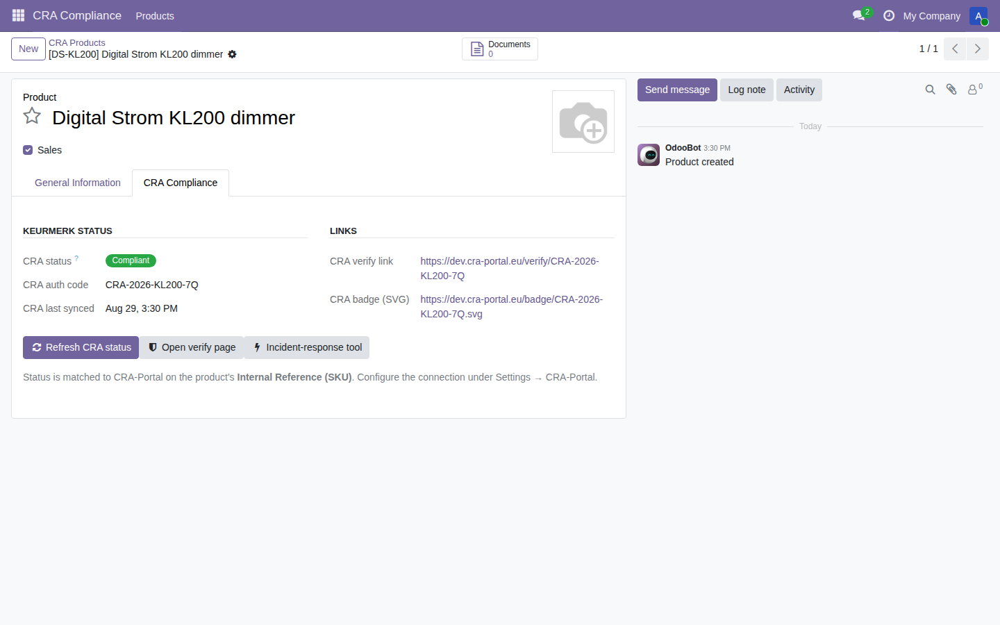
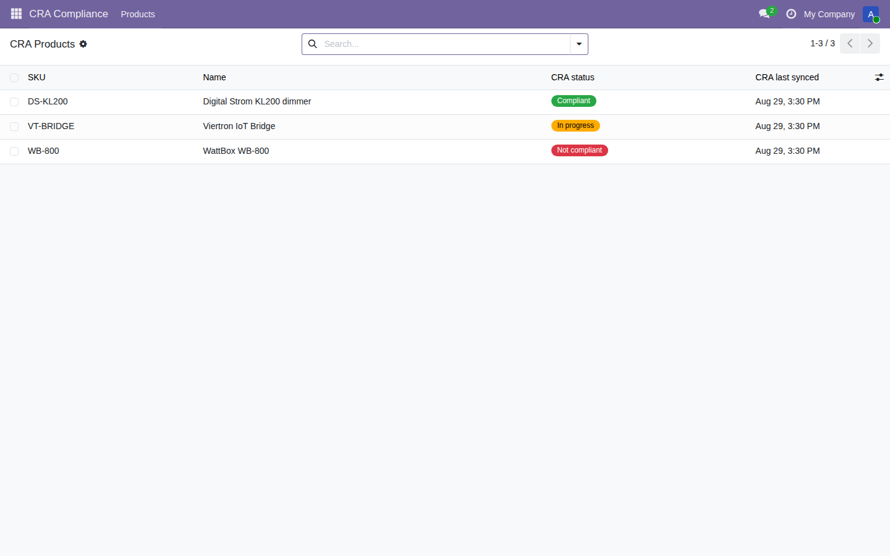
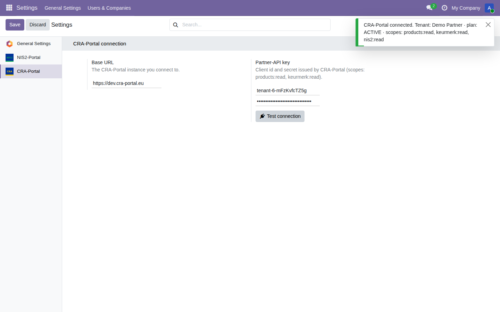

This module is a connector to the CRA-Portal compliance service (Regulation (EU) 2024/2847) and requires an active CRA-Portal account and Partner-API key to show data. Configure it under Settings → CRA-Portal and press Test connection.
Data sent: the connector sends only the product Internal Reference (SKU) and name of the products you choose to sync, plus your organisation identifier, over HTTPS, authenticated by your Partner-API key. No end-customer, financial or personal data is transmitted. Status data is written back onto your product records; you keep ownership of your data at all times. Support and Data Privacy Policy: cra-portal-support (see manifest support email).
This module surfaces compliance status; it is not legal or security advice.